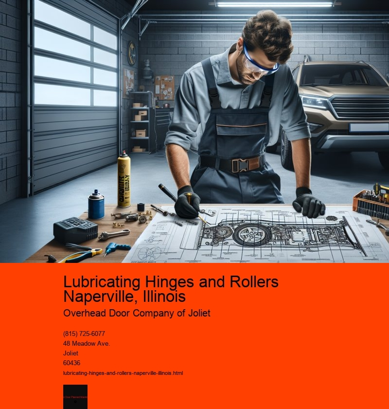

Lubricating hinges and rollers may seem like a mundane task, but for the residents of Naperville, Illinois, it is an essential part of maintaining the functionality and longevity of various mechanical systems, particularly in homes and garages. Nestled in the heartland of America, Naperville is a vibrant city known for its blend of historic charm and modern amenities. As with any place that experiences a full range of seasons, the weather can take a toll on both man-made structures and their moving parts. This is where the importance of lubrication comes into play.
In the bustling households of Naperville, garage doors are a ubiquitous feature, serving as the gateway for daily commutes and weekend adventures. These doors rely heavily on hinges and rollers to function smoothly. Over time, without proper maintenance, these components can become stiff, leading to squeaking noises and potentially causing more significant issues such as door misalignment or even breakdowns. Lubricating these hinges and rollers is therefore not just a matter of convenience, but also a preventive measure to avoid costly repairs.
The process of lubricating hinges and rollers is straightforward but requires a bit of knowledge and care. The first step is to choose the right lubricant. In Naperville, where temperatures can vary significantly, its crucial to select a lubricant that can withstand both the frigid winter months and the warmth of summer. Silicone-based lubricants are often recommended for their versatility and ability to perform well across different temperature ranges. They are also resistant to dust and dirt, which is an added benefit in maintaining the cleanliness and efficiency of the moving parts.
Once the appropriate lubricant is selected, the next step is to clean the hinges and rollers thoroughly. This involves removing any accumulated dirt, grime, or rust that can impede the movement. For many Naperville residents, this step is a routine part of their spring-cleaning checklist, as it prepares their homes for the increased use of garages during the warmer months. After cleaning, the lubricant is applied generously to the hinges and rollers, ensuring that it penetrates all the crevices and moving parts.
Lubricating hinges and rollers is not only a task for the practical homeowner but also an opportunity for community connection. In neighborhoods throughout Naperville, its not uncommon to see neighbors exchanging tips and helping each other with their home maintenance projects. This communal spirit is a hallmark of the city, reflecting a shared commitment to maintaining the integrity and beauty of their homes and surroundings.
In conclusion, while lubricating hinges and rollers may seem like a minor chore, it plays a crucial role in the upkeep of Napervilles homes. It ensures the smooth operation of garage doors, prolongs the life of these components, and prevents larger, more costly issues from arising. This simple act of maintenance embodies the proactive and caring nature of Napervilles residents, who understand that taking care of the small things can have a big impact on their quality of life. Whether youre a lifelong resident or new to the area, embracing the habit of regularly lubricating hinges and rollers is a wise step in ensuring the comfort and functionality of your home.
Lubricating Tracks Naperville, Illinois
